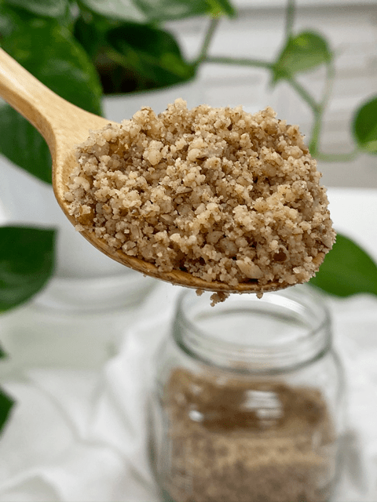

Pecan Flour – made from Whole Nut
 You might see some of these phrases in recipes; 1 cup of pecan meal, 1 cup of pecan flour, or in the directions it might read to put the nuts in a food processor and process till the nuts are finely ground or turned into a meal. They are all the same thing.
You might see some of these phrases in recipes; 1 cup of pecan meal, 1 cup of pecan flour, or in the directions it might read to put the nuts in a food processor and process till the nuts are finely ground or turned into a meal. They are all the same thing.
For starters, you can make your own pecan flour/meals. You put the pecans into the food processor and process until it is finely ground. But before you even get to that point, I do recommend soaking and dehydrating the pecans first. Please click (here) to read how and why.
Pecan Crumbles
Pecan crumbles is what it ought to be referred to because the truth is… pecans don’t break down to the consistency of flour (as you may be thinking of). The reason is that they are composed predominantly of fat. With a fat content of 70+ percent, pecans contain more fat than just about any other nut.
But don’t let fat content scare you away. These large, buttery flavored nuts are rich in numerous vitamins and minerals are known for promoting various aspects of health. They are rich in magnesium, which is a mineral known for its anti-inflammatory benefits and has also been shown to help lower blood pressure. They are so many other health benefits that you can learn about through the mighty act of Google searching.
There is, however, another way that you can achieve a finer grind of pecan flour, and that is through the process of creating pecan pulp. Pecan pulp is produced by making pecan milk. That is another whole process.

Keep a close eye on this process because if you over-process the pecans, they will release too much of their oils and if that happens, you are heading to nut butter land. Should you get distracted while you are processing your nuts and they do indeed get too oily, don’t fret. Go ahead and continue processing the pecans, add a pinch of salt and sweetener (if desired) and make a healthy pecan nut butter.
When it comes to creating our own flour, I recommend using a food processor that is fitted with an “S” blade. In a pinch, you can use a blender, but you have a higher chance it turning into nut butter because there isn’t much room for the pecans to freely spin in. It is best to make these as needed, rather than pre-making them and having them sit around. Nutrients will be lost over time. If you find that you processed too much, that’s ok… put it in a freezer-safe jar and store in the fridge, so the oils don’t go rancid.

Pecan Flour made from pecan pulp
Pecan pulp is the by-product of making pecan milk. Click here on how to make nut milk. Pecan flour is a very rich tasting, though it does have a slightly more astringent flavor.
When using in a recipe, make sure its flavor profile compliments the other ingredients that you are using. And because the pecan’s skin is left on before grinding, it is a darker brown color. I recommend using this flour in recipes that are not white or too neutral-flavored, such as white macaroon recipe.
To make the flour from pulp:
- Using an offset spatula, spread the pulp on a nonstick drying sheet on a dehydrator shelf.
- Dehydrate at 115 degrees (F) for up to 24 hours or until completely dry.
- Dry times always vary depending on the climate, how thick you spread the pulp, how full the machine is, and so forth. So use this as a guideline.
- Once dry and cooled, transfer the dehydrated pulp to a food processor and grind to a flour.
- It won’t break down to a powdery flour texture but pretty darn close.
- Store in an airtight container in the refrigerator for up to 3 days or in the freezer for longer shelf life.
Pecan Flour made from whole pecans
- Pecan flour is a very rich tasting, though it does have a slightly more astringent flavor.
- It is often referred to as pecan meal as well.
- Soak and dehydrate the pecans. Place pecans in the food processor or a high-speed blender and process until it is a fine powder. Be careful that you don’t over-process and start making pecan butter.
To make the flour from whole pecans:
- Soak and dehydrate the pecans.
- Place pecans in the food processor, fitted with an “S” blade, and process until it reaches a small crumble.
- This type of flour won’t break down to a powder, just small crumbles due to the fat content.
- Be careful that you don’t over-process and start making pecan butter.
- Try to make it only as needed, so it doesn’t go rancid if you make extra, store in an airtight container in the refrigerator for up to 3 days or in the freezer for longer shelf life.
© AmieSue.com